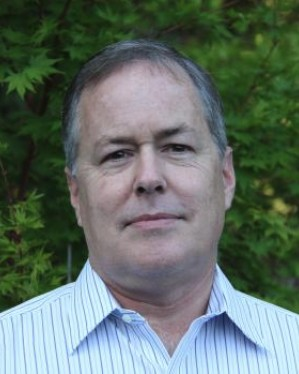

Kevin Wells
Research Scientist
About
Kevin Wells is a research scientist in the Irwin Group and Executive Director of the Stanford Institute for Theoretical Physics (SITP), a role he has held since 2015. He contributes to the group’s superconducting readout work, including studies of dc SQUID damping in superconducting resonant circuits and the noise limits of SQUID readout for high-Q resonators.
Before joining Stanford, Kevin led the Core OS networking teams at Apple and served as CEO of the internet video network Revver.
Education
- MBA, Stanford Graduate School of Business1990
- M.E. Electrical Engineering, Stanford University1985
- B.S. Physics, Stanford University1984
Contact
kcwells@stanford.edu
Mail Code 4060